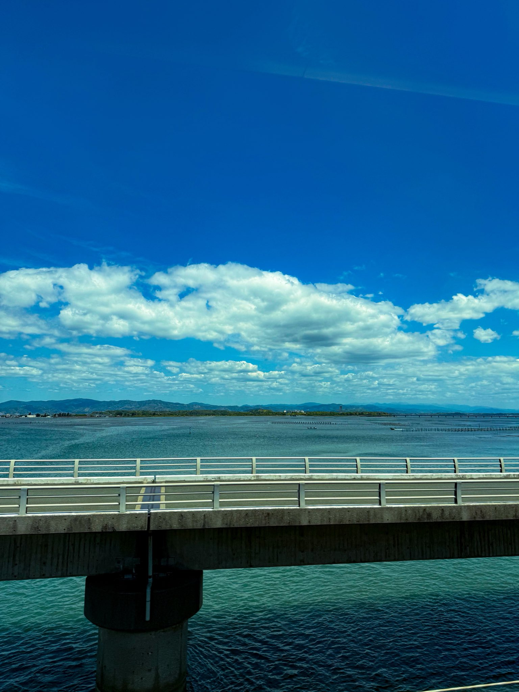
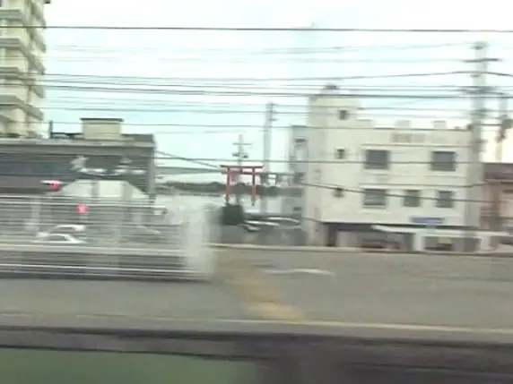

- Bereich
- Hamamatsu → Toyohashi
- Sitzseite
- Richtung Shin-Osaka: Platz A links / Platz E rechts; Richtung Tokyo umgekehrt
- Zeitpunkt
- Etwa 73 Minuten nach der Abfahrt aus Tokio mit einem Nozomi
- Sichtdauer
- Mehrere Dutzend SekundenEin ungefährer Abschnitt für Wasserblicke und Orientierungspunkte; abhängig vom Zug und seiner Geschwindigkeit.
DIE GESCHICHTE
Der Hamana-See ist eine Folge von Ausblicken
Zwischen Hamamatsu und Toyohashi öffnet sich die Stadtlandschaft plötzlich zu Wasser fast direkt unter den Fenstern. Nur wenige Abschnitte des Tokaido Shinkansen verlaufen so nah am Wasser; beim Überqueren der Brücken fühlt es sich eher wie ein Gleiten über dem Meer als eine Fahrt an einem See an. Die Plätze A und E zeigen unterschiedliche Orientierungspunkte, wodurch der Ausblick in beiden Richtungen lohnend ist.
Wenn Sie von Tokio nach Shin-Osaka reisen, schauen Sie beim Annähern an Hamamatsu → Toyohashi auf beiden Seiten aus dem Fenster. In Richtung Tokio ist die Reihenfolge umgekehrt.
WAS SIE SEHEN
Was bei der Überquerung des Hamana-Sees erscheint
Von Platz A aus blitzt kurz nach dem Eintritt nach Bentenjima ein roter, torii-förmiger Symbolturm zwischen den Gebäuden auf. Er ist ein Wahrzeichen am Wasser, kein Schreintor, und kann schon verschwinden, bevor sich der weitere Seeblick vollständig öffnet.

Suchen Sie von Platz E aus nach der weiten Rennstrecke und Tribüne von Boat Race Hamanako, gefolgt von der weißen Sun Marine Bridge. Die Schrägseilbrücke hat einen markant geneigten Turm und wurde gebaut, um Zugang und Sicherheit rund um die Rennstrecke zu verbessern.
Die Reihen von Pfählen und Gestellen im Wasser gehören zur Nori-Algen- und Austernzucht am Hamana-See. Dieser Brackwassersee vermischt Süß- und Salzwasser; der lokale Nori-Anbau hat eine über zweihundertjährige Geschichte. Die genutzte Wasserlandschaft ist ebenso charakteristisch wie das ferne Ufer.
Bei außergewöhnlich klarer Luft kann der Fuji von Platz E aus hinter Brücke und See erscheinen. Anders als der große Ausblick bei Mishima und Shin-Fuji ist dies eine winzige, ferne Silhouette am Übergang von Wasser und Himmel – vielleicht der lohnendste der fünf Fuji-Ausblicke, wenn man ihn überhaupt entdeckt.
HINTER DEM SEE
Ein zweiter Höhepunkt: Fuji hinter dem Hamana-See
Ein ferner, winziger Fuji hinter dem See.
Der Fuji hinter dem Hamana-See ist der fernste der fünf Fuji-Ausblicke. Lassen Sie von Platz E aus Ihren Blick von der Sun Marine Bridge zum Übergang von Wasser und Himmel wandern. In klarer Winterluft ist er am leichtesten zu finden, und ihn zu entdecken gehört zur Freude daran.
Der Fuji erscheint viel weiter entfernt als die Sun Marine Bridge, nahe dem Übergang von Wasser und Himmel. Nutzen Sie die Brücke als Orientierungspunkt und lassen Sie Ihren Blick dann hinter ihre rechte Seite wandern.
AUF DER KARTE
Standort auf einen Blick
Karte öffnenZwischen der Sehenswürdigkeit und dem Aussichtspunkt im Shinkansen wechseln.
IHR GUIDE FÜR UNTERWEGS
Verpassen Sie nicht den Ausblick
IM VORBEIFAHREN
Hamana-See im Video
Sehen Sie die Überquerung des Hamana-Sees, bei der der Zug scheinbar über das Wasser fährt.
Hamana-See von Platz E auf der Bergseite.
Hamana-See von Platz A auf der Meerseite.
Diese Videos verwenden offizielle YouTube-Einbettungen.
WEITERFÜHRENDE LEKTÜRE
Quellen
Offizielle Informationen und Aufzeichnungen von Ausblicken.
- Tourismus am Hamana-See
- Tourismus am Hamana-See: Nori, Austernzucht und die Umwelt des Sees
- Stadt Hamamatsu: Küstenpark Bentenjima (nur Japanisch)
- Stadt Hamamatsu: Nori-Anbau im Hamana-See (nur Japanisch)
- Offizielle Website von Boat Race Hamanako
- Kajima: Sun Marine Bridge (nur Japanisch)
- Shinkansen-Fensterblog: Artikel zum Hamana-See und dem Torii von Bentenjima (nur Japanisch)